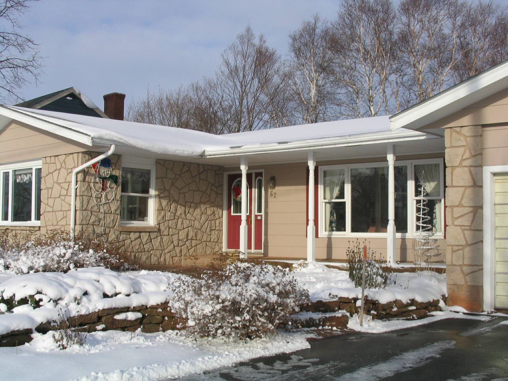

Christmas Greetings from the Island

Our Island Home
Thinking of you at Christmas!
To set the stage for Christmas greetings, I bring forward cards and greetings from last year, re-read messages and reflect upon our associations and friendships. (Obviously the process also brings tinges of both sadness and regret) My first thought always, is how blest we are with a wonderful family and friends. So, an up-front thank you to all for having added riches to our lives
Where to begin? Some new aches, pains and creaks; a few more senior’s moments (I call them brainstorms); longer and more frequent naps in front of the TV; but most all systems are functioning if only at a lower capacity. For this we are thankful.
Peace
Joy
We were delighted to have a full family reunion at the shore on PEI in late June – children, daughter-in-law, grand children and boy friends. A great gathering and one that, unfortunately, happen all too seldom.
Our travel in 2007 included 2 weeks in Virginia at Easter (with unexpected and un-necessary snow) and a two week cruise on the Danube from Vienna to the Black Sea in early October. The latter was most interesting and enjoyable.
Brian and Marie continue to live in New Mexico where both work for the National Radio Astronomy Observatory; Granddaughter Lisa and her significant other, Kevin, live and work in Los Alamos; Granddaughter Laura is at home at the moment and planning her next career moves.
Daughter, Janet, thrives in Ottawa where she earns money to support her travel habit including travel on a number of occasions throughout Canada (mostly for work), and to the USA, South America and Africa for pleasure. Her African travels included a hike to the top of Mount Kilimanjaro.
Best Wishes in the New Year to you and all you love